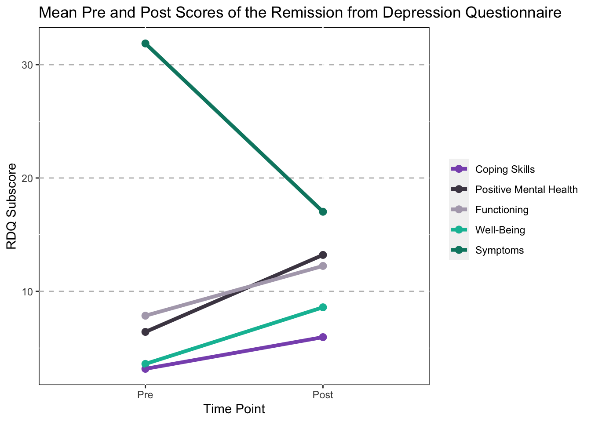

The following code visualizes the outcomes from the RDQ. The RDQ is broken up into the following categories:
#Read in a New Data Set
Mothership_RDQ<- read_sav("~/Desktop/Coding/data/Mothership_DV.sav")
Mothership_RDQ<-select(Mothership,ID1:Sexuality_1,MDD_C:Day40_CUXOS)
Mothership_RDQ<-data.frame(sapply(Mothership_RDQ,FUN=as.numeric))
#Make This Data Set Long Data
library(tidyr)
Mothership_Long_RDQ <- gather(Mothership_RDQ,rm,RDQ,rdqPRE_coping:rdqPOST_sym,
factor_key = "T")
Mothership_Long_RDQ <- Mothership_Long_RDQ[order(Mothership_Long_RDQ$ID1),]
#Create a Time Variable
Mothership_Long_RDQ$PrePost <- NA
Mothership_Long_RDQ$PrePost[Mothership_Long_RDQ$rm=="rdqPRE_coping"]<-"Pre"
Mothership_Long_RDQ$PrePost[Mothership_Long_RDQ$rm=="rdqPRE_pmh"]<-"Pre"
Mothership_Long_RDQ$PrePost[Mothership_Long_RDQ$rm=="rdqPRE_func"]<-"Pre"
Mothership_Long_RDQ$PrePost[Mothership_Long_RDQ$rm=="rdqPRE_wbs"]<-"Pre"
Mothership_Long_RDQ$PrePost[Mothership_Long_RDQ$rm=="rdqPRE_sym"]<-"Pre"
Mothership_Long_RDQ$PrePost[Mothership_Long_RDQ$rm=="rdqPOST_coping"]<-"Post"
Mothership_Long_RDQ$PrePost[Mothership_Long_RDQ$rm=="rdqPOST_pmh"]<-"Post"
Mothership_Long_RDQ$PrePost[Mothership_Long_RDQ$rm=="rdqPOST_func"]<-"Post"
Mothership_Long_RDQ$PrePost[Mothership_Long_RDQ$rm=="rdqPOST_wbs"]<-"Post"
Mothership_Long_RDQ$PrePost[Mothership_Long_RDQ$rm=="rdqPOST_sym"]<-"Post"
#Create a New Data Set with an Average Depression Variable and Race
Mothership_Mean_RDQ<-Mothership_Long_RDQ %>%
group_by(rm,PrePost) %>%
summarise(RDQ=mean(RDQ,na.rm=TRUE))
#Add a Paired Variable to the New Data Set
Mothership_Mean_RDQ<-mutate(Mothership_Mean_RDQ,
paired=case_when(rm=="rdqPRE_coping"~"1",
rm=="rdqPOST_coping"~"1",
rm=="rdqPRE_pmh"~"2",
rm=="rdqPOST_pmh"~"2",
rm=="rdqPRE_func"~"3",
rm=="rdqPOST_func"~"3",
rm=="rdqPRE_wbs"~"4",
rm=="rdqPOST_wbs"~"4",
rm=="rdqPRE_sym"~"5",
rm=="rdqPOST_sym"~"5"))
#Pre Post RDQ Plot
ggplot(data=Mothership_Mean_RDQ,
aes(x=factor(PrePost,level=c("Pre","Post")),y=RDQ,
group=rm,color=paired,!is.na(PrePost)))+
geom_point(size=2.5)+
geom_line(group=Mothership_Mean_RDQ$paired,size=1.5)+
scale_x_discrete(name="Time Point")+
scale_y_continuous(name="RDQ Subscore")+
ggtitle("Mean Pre and Post Scores of the Remission from Depression Questionnaire")+
theme(panel.grid.major.y = element_line(color = "grey",size = 0.5,linetype = 2))+
theme(panel.background=NULL)+
theme(legend.title = element_blank())+
scale_color_manual(values=c("1"="#8956BB","2"="#4C4452","3"="#B1A8B9",
"4"="#00BCA3","5"="#008570"),
labels=c("Coping Skills","Positive Mental Health",
"Functioning","Well-Being","Symptoms"))